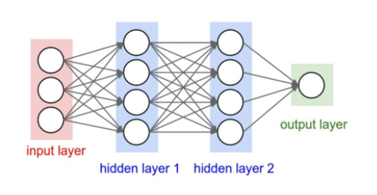
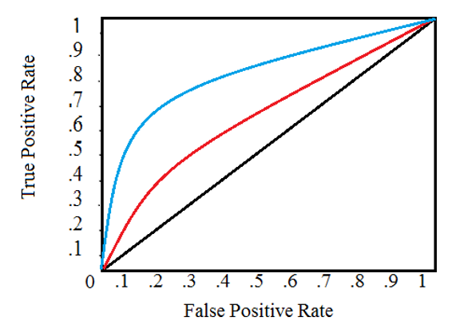

Machine Learning Architectures
Last Updated: 25 Apr 2022At its core, machine learning is a statistical science, and like most elements of statistics, a great deal of care must be taken when formatting and analyzing data. They way we chose to quantify abstract topics and/or measure error will have a significant impact on the quality of our result.
This article takes the traditional view of machine learning, where we organize the sub-disciplines by objectives and data structure. For a discussion of machine learning as a wandering exploration of linear algrebra, see the post on linear algebra. In fact, I’d recommend starting on that page first! Matrices are the bedrock of machine learning.
Or if you are just looking for a high level overview of what machine learning is, I recommend readying this post on how to think about machine learning.
Linear Regression
To start, let’s review the most basic type of machine learning problem - linear regression. The aim is to find a linear best-fit relationship between (x) and (y).
\[h(x) = b + \theta_1x_1 + ... + \theta_nx_n = b + \sum_{i=1}^{n}theta_1x_i\]Where \(h\) is the model, $b$ is an offset, and the \(\theta\)’s are the weights to be learned.
Machine Learning Algorithms
On the linear algrebra post, we’ve talked a lot about what we can do with matrices, and the reason we’ve done this is because many problems can be solved without reaching for a neural network that has millions of weights which need to be optimized. This section takes the more traditional approach to machine learning, where we think of algorithms by their objectives.
- Supervised Learning
- Unsurpervised Learning
- Reinforcement Learning
K-Means Clustering
Minimizes the intra-cluster variance. The strength of clustering algorithms lies in the fact that it is an unsupervised learning method, i.e., data does not have to come pre-labeled. The process goes:
- Propose N cluster centers.
- Assign every pixel to the closest cluster center.
- Calculate new cluster centers using the average of assigned pixels.
- Repeat until centers have stabilized.
For data classification, there typically needs to be as many dimensions as independent features (N) we’d like to distinguish. This means that for a task like image classification, we’ll need to find a way to transform a 2D image into a single point in 2D dimensional space.
Neural Networks and Deep Nets
Networks are function approximators. Each node consists of any number of inputs and any number of outputs, but is itself a simple activation function (relu, sigmoid, tangent, etc.) These functions generally produce an output in the range of 0 to 1 or -1 to 1. For each node, there are a series of weights and offsets to be calculated/tuned by the learning process.

The benefit of deep nets is that they can separate non-linear shapes, at the downside of long computation times and unreliable convergence of results. Results depend a lot on how error is measured, the function of each node, etc.
Back in the day, pre-training a neural network demonstrated that these could actually be trained efficiently, but since then other strategies have taken over. These include batch normalization and deep residual learning.
Mathematical Fundamentals for NN’s
A neural network (deep or otherwise), can be broken down into this simple equation:
\[y = h(x) = AF(b + Wx)\]Where $h(x) = y$ is the model to be trained, $b$ is some kind of offset (sometimes ignored), $W$ the set of weights to be calculated, $x$ the set of inputs, and $AF$ is some activation function. If this looks familiar, it’s because this is just a slightly modified linear regression! This mathematical basis should also reveal that neural networks are deterministic - the same input will always produce the same output!
Depending on the type of task we are training our Neural Network to do, there are different ways to encode our solution, which demand different types of activation functions, which demand different cost functions. These are outlined here:
| Task | Output | Target Encoding | Activation Function | Cost Function |
|---|---|---|---|---|
| Regression | Real | Real | Identity | Mean squared error |
| Classification | Binary | 0,1 | Sigmoid | Cross Entropy |
| Classification | Single Label | One-hot | Sigmoid | Cross Entropy |
| Classification | Many Label | Many-hot | Softmax | Cross Entropy |
Consider: why do we use one-hot encoding, and not just assign different numbers to things? For example, if we wanted to classify apples from bannanas from oranges, why can’t we use the labels 0, 1, 2?
Answer: Numbers are in sequence, and when we encode three different objects as 0,1,2 we’ve accidently introduced the concept of order, where in reality there is none.
Overfitting
Overfitting is a common issue of machine learning algorithms, where we increase the accuracy with respect to the training data, at the cost of decreased predictive accuracy. This exists because we expect some random error in the training data. When an algorithm is overfit, it tries to accomodate this random noise, and loses track of the global trends.
Receiver Operator Characteristic Curve
The R.O.C plots the probability of correct classification vs the probability of false positive. In an ideal case, the area under the curve will be equal to 1. A random guesser achieves a straight line on this plot, so a classifier needs to beat this result. Placement along the curve is also important, and changes depending on the application.

Deep Learning Architectures
Deep learning algorithms are more powerful, but messier, versions of their linear algebra counterparts. A lot of optimization and more complex architectures are used to learn more abstract behaviors. A few common deep learning architectures are:
- Feedforward NN’s
- Autoencoders
- Restricted Boltzman Machine
- Recurrent Neural Network
Multi-Layer NN aka Feedforward Neural Network
A Feedforward neural network is also your classic “deep” learning network. It’s called deep because there are additional hidden layers between the input and output. In general, adding more layers is not the same as adding more nodes to an existing layer, and the relationship between the two is still being explored today.
Autoencoders
An autoencoders is a form of unsupervised learning. The goal is to compress and decompress information, which forces the algorithm to find key features to “encode” useful patterns. These can be implemented as a deep neural net, but one in which the output has the same dimension as the input. Additionally, the hidden layer(s) must have fewer nodes than either the input or output.
There are two flavors of autoencoders:
- Regularized autoencoders, or sometimes called sparse autoencoders, are effective for classification tasks.
- Variational autoencoders use probability distributions instead of discrete variables, and are effective for generating new content.
Restricted Boltzmann Machine (RBM)
A restricted Boltzmann machine has two layers - a visible layer, and a hidden layer. Every node between the two layers are connected, but none of the nodes within a layer are connected.
The general idea behind a RBM is that there are hidden triggers which result in the data we see. The weights tie each cause (hidden layer) to each effect (visible layer). These result in probabilities, so we just have to tune our weights until the predicted probability of each event matches the probability distribution we see in our training data!
The words “trigger” and “result-in” are here to illustrate the idea, but in reality no causal relationship is being proven here! A more accurate version would be to say that there are hidden “indicators” which “correlate to” the data we see.
One advantage to unsupervised learning with an RBM is that results can be obtained with only a few examples. Today, training is performed using an algorithm called constrastive divergence, which overcomes some of the scaling issues with RBM’s.
Energy Equation
\[E(v,h) = -a^Tv - b^Th - v^TWh\]Recurrent Neural Networks (RNN)
Before we jump into an RNN, consider a simple sentence generation program, which predicts the next word based only on the last word it encountered. Maybe the output looks something like this:
> he drinks f("drinks")
> he drinks water f("water")
> he drinks water park f("park")
This is clearly limited because each prediction is made without the context of the rest of the sentence (“drinks” and “water” go together, as does “water” and “park”, but all three certainly do not make sense together!). Flip this around in terms of a learning algorithm and you can run into the same problem.
A recurrent neural networks is structured such that the output of a hidden layer is used as an additional input back into the same hidden layer. This allows them to learn based on the current AND previous state. But what does the previous state depend on? The state before that. So by recusion, an RNN learns on the entire sequence.
The output layer of an RNN is usually just the input layer but shifted by one step. Think about it with this example: If the sequence to be predicted by the RNN is ABCD, then for every step of the sequence, a trained RNN would generate:
A->AB, AB->ABC, ABC->ABCD, etc. See how the input sequence can also act as the labeled output used in a supervised learning algorithm?
Long Short Term Memory
For this topic, I recommend reading colah’s blog post on understanding LSTM’s. He explains it much better than I can, plus he’s got pictures to go along with.
Convolutional Neural Networks
CNN’s have been used successfully for image classification. The idea is that a smaller convolutional matrix, or kernel, is passed over (i.e. convolved ) with the raw data. This is then repeated over and over, and finally passed through a fully connected layer (like in regular Neural Networks) before ending with a softmax function to classify the image.
The key to CNN’s is the kernel matrix. Different kernels can be trained to identify different “features” from the data, ranging from the very basic (e.g. an edge or a corner), to more advanced objects (e.g. an eye or a nose), and finally to the most high level (e.g. a face).
In a sense, convolutional networks juxtapose recurrent networks. Where RNN’s are deep, CNNs are shallow.
Compound Architectures
In recent years, many people have proposed combined approaches, which make use of more than one architecture. There is for instance, something called an RNN Encoder-Decoder, which attempts to learn the relationship between two different encodings of two different sequences.
Or to express it another way, the goal is to encode the sequence learned by one RNN into another sequence produced by another RNN. The main application here being translation, where two languages expressing the same idea can have entirely different lengths and grammers.